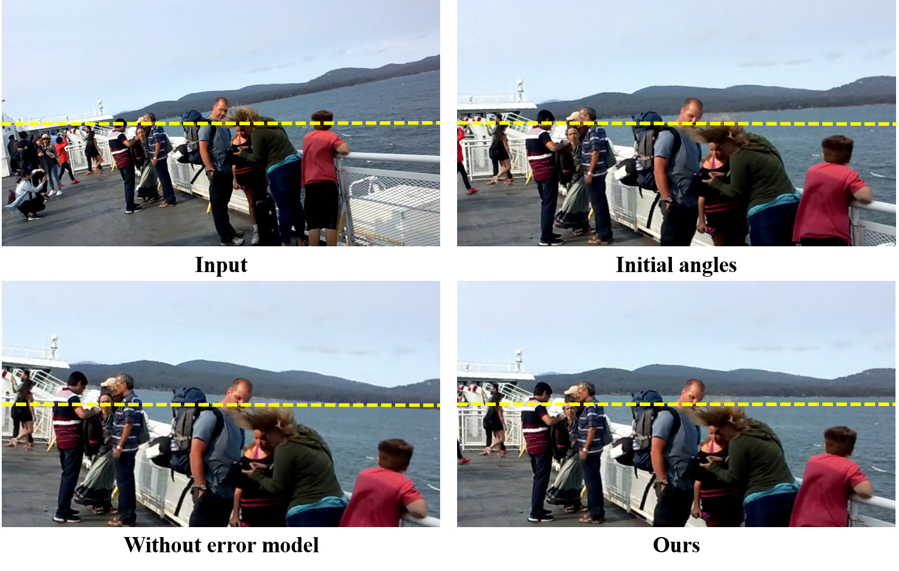
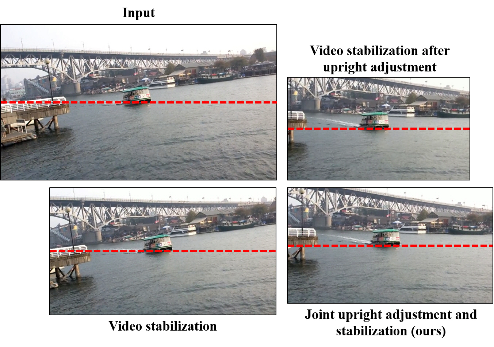
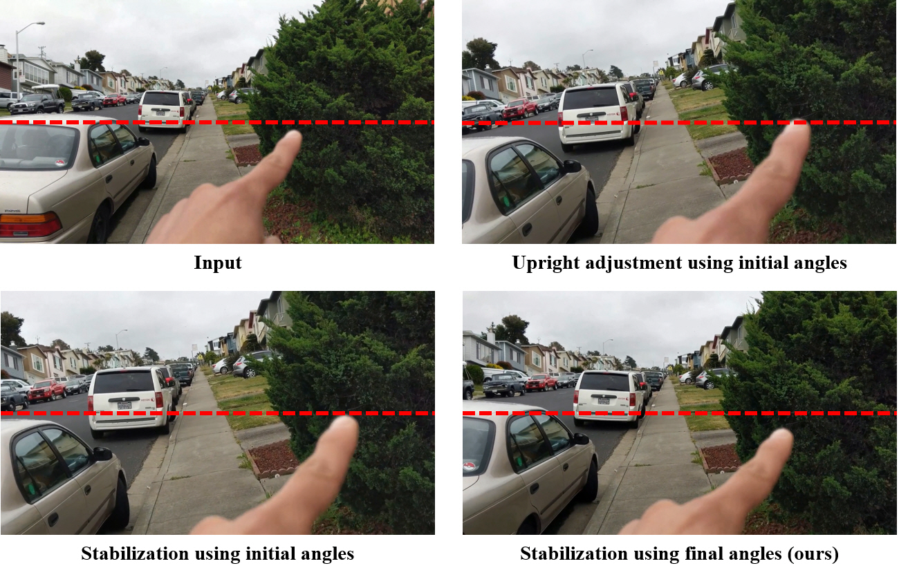
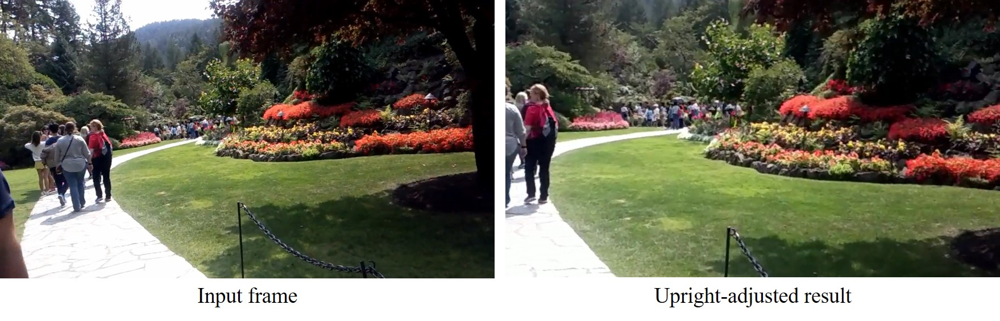
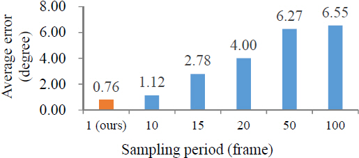

Video Upright Adjustment and Stabilization
Jucheol Won
wjc0319@dgist.ac.kr
DGIST
|
Sunghyun Cho
s.cho@postech.ac.kr
POSTECH
|
Video Upright Adjustment Examples
We first show additional examples of video upright adjustment that are not included in the paper.
The input video clips were downloaded from Youtube.
You may switch to a different example by clicking the buttons below.
Joint Upright Adjustment and Stabilization Examples
We show additional examples of joint video upright adjustment and stabilization that are not included in the paper.
You may switch to a different example by clicking the buttons below.
Rotation Estimation Network (Sec. 2 in the paper)
To generate our training dataset, we used the World Cities dataset , which consists of 2M images of various scenes taken in 40 cities.
We randomly sampled 300K images from the dataset, and manually removed slanted images and other disturbing images such as logos and objects
captured in unusual directions.
We finally obtained 110K images for our training set.
We assumed that all images in the training set are upright, i.e., their rotation angles are zero.
The final training set consists of not only images of man-made structures, but also pictures with no obvious straight lines such as
portrait pictures, and images of curved objects.
The proportion of such images in our training set is about a half.
We also sampled 500 images that look upright from the World Cities dataset for our validation set.
Among 500 images, 100 images do not have straight horizontal or vertical lines such as boundaries of buildings.
For training the network, we randomly rotated images as described in our paper.
Then, the largest square-shaped region at the center of each rotated image is cropped.
The cropped region was resized to 224 × 224, which is the input size of the VGG-19 network.
We then trained the network to predict the random rotation angles used for rotating the input images.
We fine-tuned a pre-trained VGG-19 network.
Specifically, we initialized all the parameters in the network with pre-trained prameters except for the last fully-connected layer,
which was randomly initialized.
During the first epoch, we used Adam optimizer with a learning rate of 1.0×10-4.
From the second epoch, we used stochastic gradient descent and set the learning rate to 2.0×10-3.
We decreased the learning rate by 0.1 times for every 55K iterations until it reached at 2.0×10-6.
Error Model (Fig. 4 in the paper)

Comparison of different angle estimation.
demonstates the effect of our error model.
The video frames in the figure correspond to the results at 00:09 in the video below.
For better visualization, horizontal lines (yellow dotted) are placed.
While both results of 'initial angles' and 'without error model' are still slanted because of incorrectly estimated rotation angles,
our result is perfectly fixed.
Below are two video clips obtained without and with stabilization.
Reflecting Relative Rotation

Comparison between the simple prior with different lambda values and our temporal consistency prior.
To produce temporally smooth angles, we may simply define ρ in Eq. (3) in the paper as follows:
ρ(θt,θt+1)=|θt+1-θt|2,
assuming that there are no or very small rotational motion between consecutive frames.
However, the equation above ignores rotational motion that may exist between consecutive frames, and consequently, leads to inaccurate results.
compares our temporal consistency prior that reflects the relative rotation between consecutive frames with the simple prior defined above.
The result images in are obtained using our joint upright adjustment and stabilization with different priors.
Regardless of lambda, the simple prior cannot accurately estimate rotation angles, so it produces more slanted results than ours.
Below are two video clips obtained without and with stabilization.
Upright Adjustment for Visual Recognition
| Original | Rotated | Upright-adjusted |
| 0.5302 | 0.3448 | 0.5238 |
Object detection performance on the ImageNet VID validation dataset in terms of mean average precision at Intersection-over-Union threshold of 0.5.
An interesting application of our method is to pre-process video data before visual recognition tasks such as object detection,
the performance of which can be largely degraded for slanted contents.
To examine the effect of upright adjustment on video object detection,
we randomly sampled three video clips from the validation set of the ImageNet VID Challenge 2015 dataset , and rotated them.
To generate rotated video clips, we randomly sampled one per 150 frames on average, and randomly set their rotation angles by up to 40 degrees.
For the other frames, we linearly inporlated the rotation angles.
We did not crop invalid frame boundaries, but extended the frames so that the entire contents can be preserved.
We ran a state-of-the-art video object detection method on the rotated video clips and measured its performance.
We also applied our video upright adjustment method to the rotated videos, and measured the performance of the object detection method on them.
To measure the performance, we rotated the ground truth bounding boxes according to the rotation angles of video frames, and computed the Intersection-over-Union between the rotated ground truth and detected bounding boxes.
shows, while camera rotation severely degrades the performance of object detection, our method can successfully recover the original performance.
The video below shows a comparison of object detection on rotated and upright-adjusted video clips.
shows object detection results at 00:00 and 00:09 in the video above.
Comparison of object detection on rotated and upright-adjusted video clips.
Joint Upright Adjustment and Stabilization (Fig. 5 in the paper)

Comparison among video stabilization , video stabilization after upright adjustment, and our joint upright adjustment and stabilization.
shows a comparison among results of video stabilization , video stabilization after upright adjustment, and our joint approach.
While video stabilization without upright adjustment achieves the minimum loss of spatial resolution, its result shows slanted contents.
The result of video stabilization after upright adjustment has upright contents, but it also shows severe loss of spatial resolution.
On the other hand, the result of our joint approach shows upright contents with smaller loss of spatial resolution.
Below is a video that shows the comparison above.
Joint Upright Adjustment and Stabilization using Initial and Final Angles (Fig. 6 in the paper)

Joint upright adjustment and stabilization using our initial and final angles.
shows a comparison between joint upright adjustment and stabilization using initial and final angles.
As initial angles sometimes have large error, stabilization using initial angles may still produce a slanted video as shown in the figure.
Furthermore, large error in initial angles may introduce false shaky camera motion, which degrades the performance of video stabilization.
On the other hand, our method using final angles produces a stable and upright video more reliably.
Below is a video corresponding to .
Videos without Straight Lines

Upright adjustment of a video without straight lines
As our method uses a convolutional neural network for initial angle estimation, our method is able to handle videos with no obvious straight lines.
shows such an example, which corresponds to Test 3 (0:39-1:03) of our user study below.
The example shows a park with lots of plants and trees, so it has no obvious horizontal or vertical lines.
Even in such a case, our method can successfully correct slanted video contents.
User Study
For our user study, we collected 10 video clips of slanted and shaky contents.
For each video, we applied upright adjustment, video stabilization [3], and joint upright adjustment and video stabilization.
Finally, we obtained 20 pairs of video clips.
Among them, 10 pairs are of input video clips and their corresponding upright adjustment results, and the other 10 pairs are of video stabilization, and our joint upright adjustment and video stabilization results.
The video below shows all video clips used in our user study.
and show the user study results on the input video clips and their corresponding upright adjustment results, and on the results of video stabilization and our joint approach.
In each table cell, '1' indicates that the participant preferred our result, which is either an upright adjustment or joint upright adjustment and stabilization result.
Both tables show that our approach consistently improves the perceptual quality of video clips in both scenarios.
| Participants | |
| A1 | A2 | A3 | A4 | A5 | A6 | A7 | A8 | A9 | A10 | A11 | A12 | A13 | A14 | A15 | A16 | A17 | A18 | A19 | A20 | SUM | AVR |
| Video No. | 1 | 0 | 1 | 0 | 1 | 1 | 0 | 0 | 1 | 0 | 0 | 0 | 0 | 0 | 1 | 1 | 0 | 0 | 1 | 0 | 1 | 8 | 0.4 |
| 2 | 1 | 1 | 1 | 1 | 1 | 1 | 0 | 1 | 1 | 1 | 1 | 1 | 0 | 1 | 1 | 1 | 1 | 1 | 1 | 1 | 18 | 0.9 |
| 3 | 1 | 1 | 1 | 0 | 1 | 1 | 1 | 1 | 1 | 1 | 1 | 1 | 0 | 0 | 1 | 1 | 1 | 1 | 1 | 1 | 17 | 0.85 |
| 4 | 1 | 1 | 1 | 1 | 1 | 1 | 0 | 1 | 1 | 1 | 1 | 1 | 1 | 1 | 1 | 1 | 0 | 1 | 1 | 1 | 18 | 0.9 |
| 5 | 0 | 1 | 1 | 0 | 1 | 1 | 1 | 1 | 1 | 1 | 1 | 1 | 0 | 1 | 1 | 1 | 1 | 1 | 1 | 1 | 17 | 0.85 |
| 6 | 1 | 1 | 0 | 1 | 1 | 1 | 0 | 1 | 1 | 1 | 1 | 0 | 0 | 1 | 0 | 1 | 0 | 1 | 1 | 1 | 14 | 0.7 |
| 7 | 1 | 1 | 1 | 1 | 1 | 1 | 0 | 1 | 1 | 1 | 1 | 1 | 0 | 1 | 1 | 1 | 1 | 0 | 1 | 1 | 17 | 0.85 |
| 8 | 1 | 1 | 0 | 1 | 1 | 1 | 1 | 0 | 1 | 0 | 1 | 1 | 0 | 0 | 1 | 1 | 1 | 0 | 0 | 1 | 13 | 0.65 |
| 9 | 1 | 0 | 1 | 1 | 1 | 1 | 1 | 1 | 1 | 1 | 1 | 1 | 0 | 0 | 1 | 1 | 1 | 1 | 1 | 1 | 17 | 0.85 |
| 10 | 1 | 1 | 1 | 1 | 1 | 1 | 0 | 0 | 1 | 1 | 1 | 1 | 1 | 1 | 1 | 1 | 1 | 1 | 0 | 1 | 17 | 0.85 |
| SUM | 8 | 9 | 7 | 8 | 10 | 9 | 4 | 8 | 9 | 8 | 9 | 8 | 2 | 7 | 9 | 9 | 7 | 8 | 7 | 10 |
| AVR | 0.8 | 0.9 | 0.7 | 0.8 | 1 | 0.9 | 0.4 | 0.8 | 0.9 | 0.8 | 0.9 | 0.8 | 0.2 | 0.7 | 0.9 | 0.9 | 0.7 | 0.8 | 0.7 | 1 |
User study result on input video clips and their corresponding upright adjustment results.
| Participants | |
| A1 | A2 | A3 | A4 | A5 | A6 | A7 | A8 | A9 | A10 | A11 | A12 | A13 | A14 | A15 | A16 | A17 | A18 | A19 | A20 | SUM | AVR |
| Video No. | 1 | 1 | 1 | 0 | 1 | 0 | 1 | 1 | 0 | 1 | 0 | 1 | 0 | 0 | 0 | 0 | 1 | 0 | 0 | 1 | 1 | 10 | 0.5 |
| 2 | 1 | 1 | 1 | 1 | 1 | 1 | 0 | 1 | 1 | 1 | 1 | 1 | 0 | 1 | 1 | 1 | 1 | 1 | 1 | 1 | 18 | 0.9 |
| 3 | 1 | 1 | 1 | 1 | 1 | 1 | 1 | 1 | 1 | 1 | 1 | 1 | 0 | 1 | 1 | 1 | 0 | 0 | 1 | 1 | 17 | 0.85 |
| 4 | 1 | 1 | 1 | 1 | 1 | 1 | 1 | 1 | 1 | 1 | 1 | 1 | 0 | 1 | 1 | 1 | 1 | 1 | 1 | 1 | 19 | 0.95 |
| 5 | 1 | 1 | 1 | 1 | 1 | 1 | 1 | 1 | 1 | 1 | 1 | 0 | 0 | 1 | 1 | 1 | 1 | 1 | 1 | 0 | 17 | 0.85 |
| 6 | 1 | 1 | 1 | 1 | 1 | 1 | 0 | 1 | 1 | 1 | 1 | 1 | 1 | 1 | 1 | 1 | 1 | 1 | 1 | 1 | 19 | 0.95 |
| 7 | 1 | 1 | 1 | 1 | 1 | 1 | 1 | 1 | 1 | 1 | 1 | 1 | 0 | 1 | 1 | 1 | 1 | 1 | 1 | 1 | 19 | 0.95 |
| 8 | 1 | 1 | 0 | 1 | 1 | 1 | 0 | 1 | 1 | 1 | 1 | 1 | 1 | 1 | 1 | 1 | 0 | 1 | 0 | 1 | 16 | 0.8 |
| 9 | 1 | 1 | 1 | 1 | 1 | 1 | 0 | 1 | 1 | 1 | 1 | 1 | 0 | 1 | 1 | 1 | 1 | 1 | 1 | 0 | 17 | 0.85 |
| 10 | 1 | 1 | 1 | 1 | 0 | 1 | 0 | 0 | 1 | 1 | 0 | 1 | 0 | 1 | 1 | 1 | 0 | 1 | 0 | 1 | 13 | 0.65 |
| SUM | 10 | 10 | 8 | 10 | 8 | 10 | 5 | 8 | 10 | 9 | 9 | 8 | 2 | 9 | 9 | 10 | 6 | 8 | 8 | 8 |
| AVR | 1 | 1 | 0.8 | 1 | 0.8 | 1 | 0.5 | 0.8 | 1 | 0.9 | 0.9 | 0.8 | 0.2 | 0.9 | 0.9 | 1 | 0.6 | 0.8 | 0.8 | 0.8 |
User study result on video stabilization and our joint approach.
Sparse Estimation of Rotation Angles

Average errors of estimated rotataion angles with respect to different sampling rates.
As we use relative rotation in our method, one correct angle estimate from the rotation estimation network might be enough for upright adjustment for an entire video.
Similarly, we may sample only a few frames, e.g., 1 per 10 frames, and use the estimates of their rotation angles instead of using the initial estimates of all frames.
However, even the best initial angle with the lowest variance may still have error.
Considering error, the best way to estimate accurate final angles is to use all initial angles.
shows that average error increases as the sampling rate decreases.